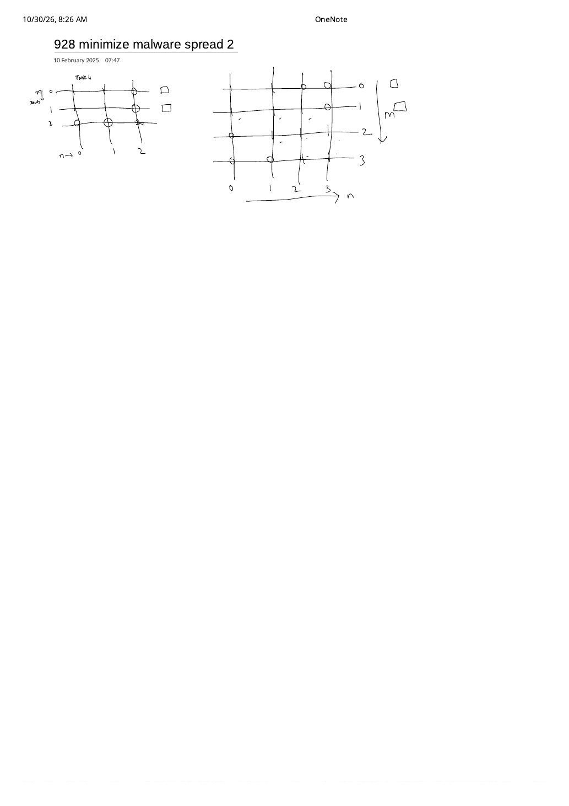

LC 928: Minimize Malware Spread II — Adjacency Row/Column Cuts & Clean-Subgraph DSU
Expanded from handwritten competitive coding study note: 09_928_minimize_malware_spread_2.pdf (dated Feb 10, 2025) · View original handwritten page
1. Problem Statement & Crucial Difference from LC 924
You are given an $n \times n$ symmetric adjacency matrix graph ($2 \le n \le 300$) and an array initial of initially infected vertices. Malware spreads along edges until every node reachable from an infected node becomes infected. You will completely remove exactly one node $v \in \text{initial}$, deleting $v$ and all connections from $v$ to any other node. Return the node $v \in \text{initial}$ whose complete removal minimizes the final total number of infected nodes $M(\text{initial})$ (if multiple choices tie, return the smallest node index).
| Variant | What Removing $v \in \text{initial}$ Does | Chain 0* — 1* — 2 — 3 (initial = [0, 1]) |
|---|---|---|
| LC 924 (Part I) | Cures $v$, but leaves $v$ and its edges in the graph as a relay vertex. | Curing 1 saves 0 nodes: malware from 0 still travels through 1 into 2 — 3! |
| LC 928 (Part II) | Deletes $v$ and its entire row & column of edges in graph. |
Deleting 1 severs (0,1) and (1,2), shielding {2, 3} completely! Final infected: only {0} ($M = 1$). |
2. Reverse-Thinking DSU: Why We Exclude All Infected Nodes Upfront
In 09_928_minimize_malware_spread_2.pdf, the author sketches $3 \times 3$ and $4 \times 4$ adjacency-matrix grids ($m \times n$ line intersections with circles marking graph[i][j] == 1 and checkboxes □ alongside rows $0$ and $1$). Deleting an infected candidate $v$ physically erases row $v$ and column $v$ from that grid.
Here is the core DSU obstacle: Union-Find is an append-only structure—you can unite edges, but you cannot delete a vertex and split components back apart! How do we evaluate deleting each candidate $v \in \text{initial}$ without rebuilding the graph $|\text{initial}|$ times?
The Three-Phase Clean-Subgraph DSU Algorithm ($\mathcal{O}(n^2 \cdot \alpha(n))$)
Flip the problem inside out: never put ANY node from initial into the DSU!
- Phase 1 — Build DSU strictly on clean vertices ($V \setminus \text{initial}$): Union $(i, j)$ iff both $i$ and $j$ are clean and
graph[i][j] == 1. Now the clean subgraph decomposes into disjoint connected components with exact root sizessz[r]. Notice that malware can never pass from one clean component to another without stepping through an infected node—and since all OTHER infected nodes $w \ne v$ remain infected anyway, whether $w$ passes infection along is already captured by $w$'s own edges! - Phase 2 — Collect each infected node's deduplicated clean component neighbors: For each $v \in \text{initial}$, inspect its clean neighbors $u$ (
!isInfected[u] && graph[v][u] == 1) and build the set of distinct clean roots $S(v) = \{\text{findPar}(u)\}$. For every $r \in S(v)$, incrementtouchCount[r]++. - Phase 3 — Count uniquely-infected clean components: When we delete $v$, which clean components $r \in S(v)$ actually stay clean?
- If
touchCount[r] == 1, $v$ was the sole infected node with an edge into component $r$—deleting $v$ saves allsz[r]vertices of $r$! - If
touchCount[r] >= 2, some other infected node $w \ne v$ also touches $r$, so $r$ gets infected regardless—deleting $v$ saves $0$ vertices from $r$!
$$\text{Saved}(v) = \sum_{\substack{r \in S(v) \\ \text{touchCount}[r] = 1}} \text{sz}[r]$$ - If
0* — 1* has an edge, yet because 1* is outside the clean DSU, deleting 1* immediately isolates r₁ = {2, 3} (touchCount[r₁] = 1), while r₂ = {4, 5} still catches malware directly from 0* (touchCount[r₂] = 2).3. Brute Simulation $\to$ Optimal Clean-Subgraph DSU
| Approach | Time | Space | Notes |
|---|---|---|---|
| Per-Candidate Deleted-Node BFS/DFS | $\mathcal{O}(k \cdot n^2)$ | $\mathcal{O}(n)$ | For each $v \in \text{initial}$, run BFS from $\text{initial} \setminus \{v\}$ skipping $v$. Up to $300^3 = 2.7 \times 10^7$ ops. |
| Clean-Subgraph DSU + Bridge Count | $\mathcal{O}(n^2 \cdot \alpha(n))$ | $\mathcal{O}(n)$ | Reads the $n \times n$ matrix once! Scales even if $n = 3000$ and $k = 3000$. |
4. Step-by-Step Dry Run on $4 \times 4$ Matrix (Matching Right Sketch on Sheet)
graph = [[1,1,0,0], [1,1,1,0], [0,1,1,1], [0,0,1,1]], initial = [0, 1]
1. Clean nodes: {2, 3} (since isInfected = [T, T, F, F]).2. Phase 1 (Clean DSU): Edge
(2, 3) has graph[2][3] == 1 $\implies$ unite(2, 3) $\to$ root 2 with sz[2] = 2.3. Phase 2 (Infected bridges):
•
v = 0: clean neighbors = $\emptyset \implies S(0) = \{\}$.•
v = 1: clean neighbor 2 (root 2) $\implies S(1) = \{2\}$, touchCount[2] = 1.4. Phase 3 (Score):
• $\text{Saved}(0) = 0$.
• $\text{Saved}(1) = \text{sz}[2] = 2 \gt 0 \implies$ return
1!
5. Clean C++ Implementation
Watch Out: Deduplicate Clean Roots per Infected Node $v$!
Suppose infected node $v$ has two direct edges into the same clean component $r$ (e.g., $v$ connects to both $2$ and $3$ inside $\{2, 3\}$). If you increment touchCount[findPar(u)]++ without deduplicating $S(v)$ first, touchCount[r] becomes $2$ instead of $1$, fooling Phase 3 into thinking two different infected nodes touch $r$! Always insert findPar(u) into a per-$v$ set first.
#include <bits/stdc++.h>
using namespace std;
class Solution {
public:
int minMalwareSpread(vector<vector<int>>& graph, vector<int>& initial) {
int n = graph.size();
vector<bool> isInfected(n, false);
for (int v : initial) isInfected[v] = true;
vector<int> parent(n), sz(n, 1);
iota(parent.begin(), parent.end(), 0);
auto findPar = [&](auto& self, int x) -> int {
return parent[x] == x ? x : parent[x] = self(self, parent[x]);
};
auto unite = [&](int u, int v) {
int pu = findPar(findPar, u), pv = findPar(findPar, v);
if (pu == pv) return;
if (sz[pu] < sz[pv]) swap(pu, pv);
parent[pv] = pu;
sz[pu] += sz[pv];
};
// Phase 1: Union ONLY clean-to-clean edges
for (int i = 0; i < n; ++i) {
if (isInfected[i]) continue;
for (int j = i + 1; j < n; ++j) {
if (!isInfected[j] && graph[i][j] == 1) {
unite(i, j);
}
}
}
// Phase 2: Collect deduplicated clean roots touched by each v in initial
sort(initial.begin(), initial.end()); // Smallest index wins ties!
vector<int> touchCount(n, 0);
vector<vector<int>> cleanRootsOf(n);
for (int v : initial) {
auto& roots = cleanRootsOf[v];
for (int u = 0; u < n; ++u) {
if (!isInfected[u] && graph[v][u] == 1) {
roots.push_back(findPar(findPar, u));
}
}
sort(roots.begin(), roots.end());
roots.erase(unique(roots.begin(), roots.end()), roots.end());
for (int r : roots) touchCount[r]++;
}
// Phase 3: Pick v maximizing uniquely-saved clean component sizes
int ans = initial[0], maxSaved = -1;
for (int v : initial) {
int saved = 0;
for (int r : cleanRootsOf[v]) {
if (touchCount[r] == 1) saved += sz[r];
}
if (saved > maxSaved) { // Strict > preserves smallest index on ties
maxSaved = saved;
ans = v;
}
}
return ans;
}
};6. Complexity Proof & Key Edge Cases
- Time Complexity — $\mathcal{O}(n^2 \cdot \alpha(n))$: Phase 1 scans the upper triangle $\binom{n}{2}$ of
graph; Phase 2 scans $|\text{initial}| \cdot n \le n^2$ entries and deduplicates at most $n$ roots. - Space Complexity — $\mathcal{O}(n + \sum |S(v)|) \subseteq \mathcal{O}(n^2)$ worst-case ($\mathcal{O}(n)$ typical): DSU arrays use $2n$ ints, and
cleanRootsOfstores at most one entry per clean component touched by each infected source. - Key Edge Cases:
- Every clean component has
touchCount[r] >= 2(allsaved == 0): Every candidate $v$ removes itself ($1$ fewer infected node) plus $0$ clean nodes. InitializingmaxSaved = -1after sortinginitialensuressaved = 0 > -1picksmin(initial)! - Multiple edges from the same $v$ into one clean component: Handled by deduplicating $S(v)$ before incrementing
touchCount[r].
- Every clean component has
From the Handwritten Notes
View original handwritten page — 09_928_minimize_malware_spread_2.pdf (Adjacency matrix grid intersections & row/column deletion sketch)


09_928_minimize_malware_spread_2.pdf (10 February 2025): $3 \times 3$ and $4 \times 4$ $m \times n$ adjacency-grid sketches showing edge intersections and infected row/column candidates.